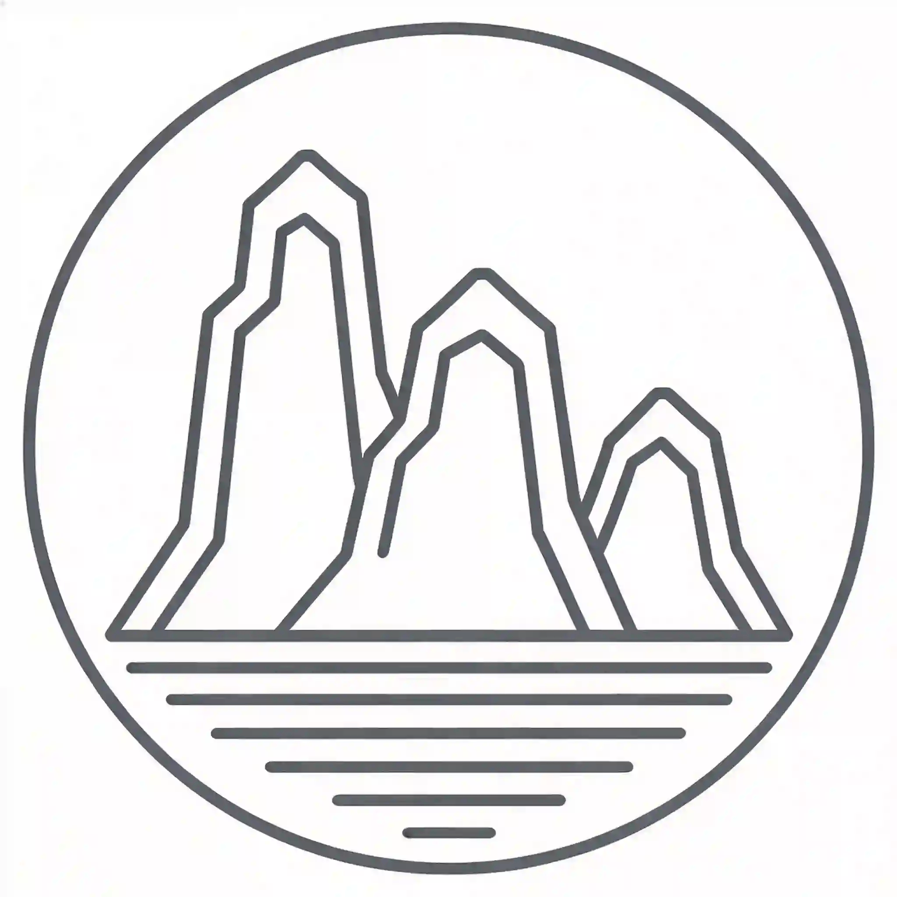
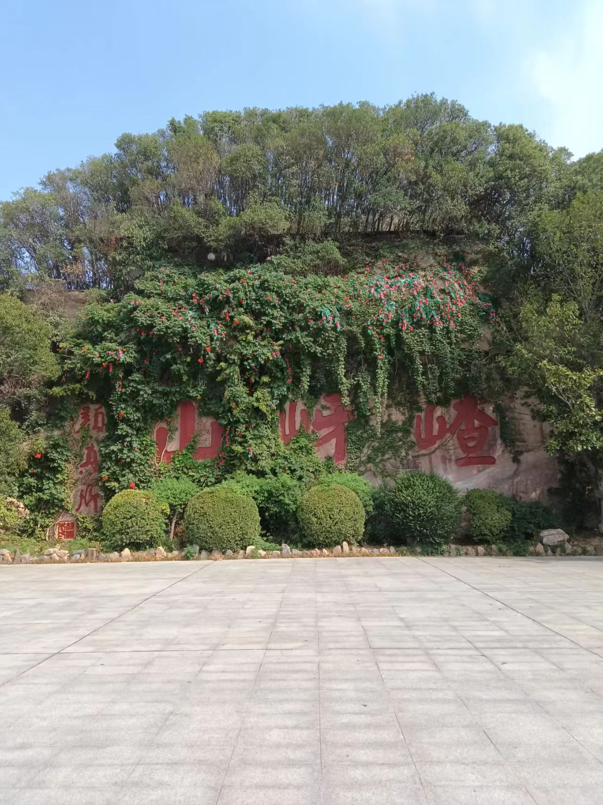

伏牛山东缘独特花岗岩峰丛地貌，亿万年风化造就满山怪石，西游文化名扬海内外
观光 · 研学 · 休闲 · 探险 — 综合山水景区
了解嵖岈山地理位置、景区规模与交通区位，感受"中原盆景"的独特魅力。
石猴院、黑风洞、一线天、天磨湖、西游文化广场等核心景观一览。
吴承恩创作溯源、西游记续集拍摄地，沉浸式感受神话故事氛围。
开放时间、门票信息、三条经典游览路线与实用游玩贴士。
确山凉粉、汝南鸡肉丸子、顿岗油馍等驻马店特色美食与伴手礼。
周边山水景区、城市人文风光，领略豫州腹地的独特地域文化。